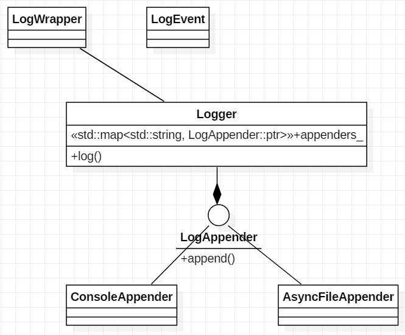
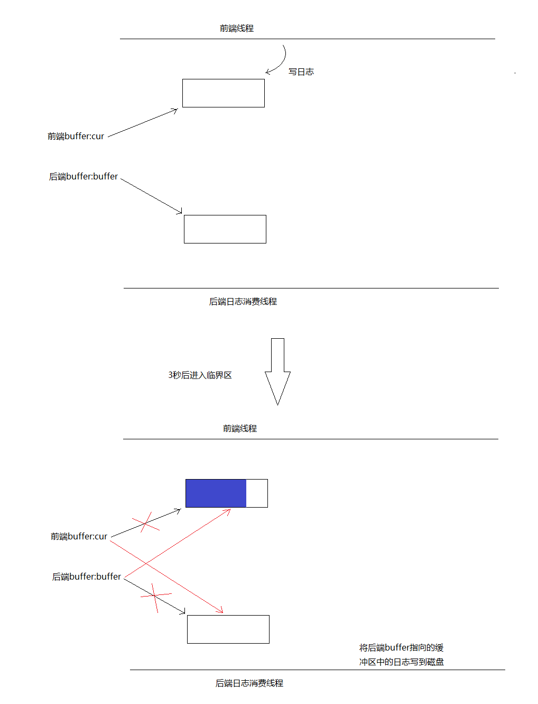
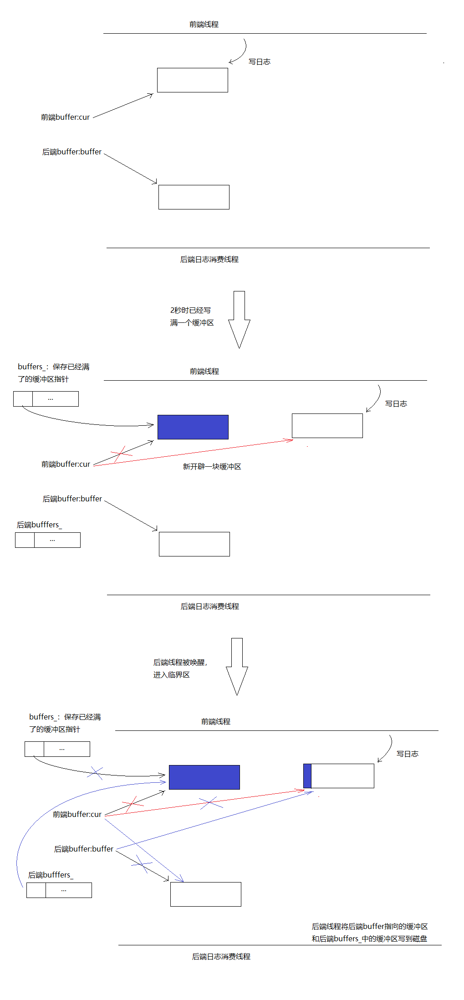
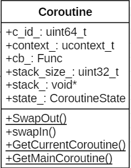
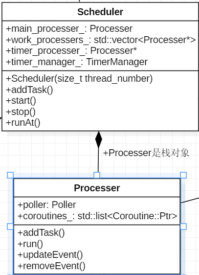
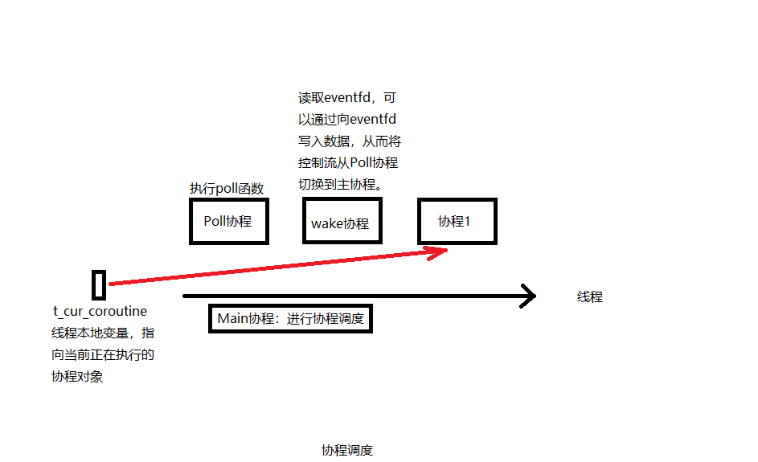
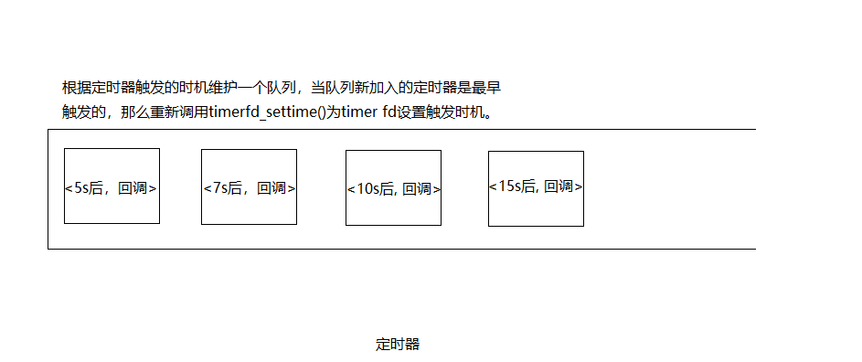

项目地址：https://github.com/gatsbyd/melon
开发服务端程序的一个基本任务是处理并发连接，现在服务端网络编程处理并发连接主要有两种方式：
在线程很宝贵的情况下，常见的服务器编程模型有如下几种：
melon是基于Reactor模式的Linux C++网络服务框架，集合了上述两种方式，实现了协程的概念，对一些函数进行了hook，所以可以像操作阻塞IO一样进行编程。
在工程主目录下新建build目录，进入build目录，
cmake ..
make all编译完成后，example和test中的可执行程序分别位于build目录下的example和test中。
以echo服务端为例，
void handleClient(TcpConnection::Ptr conn){
conn->setTcpNoDelay(true);
Buffer::Ptr buffer = std::make_shared<Buffer>();
while (conn->read(buffer) > 0) {
conn->write(buffer);
}
conn->close();
}
int main(int args, char* argv[]) {
if (args != 2) {
printf("Usage: %s threads\n", argv[0]);
return 0;
}
Logger::setLogLevel(LogLevel::INFO);
Singleton<Logger>::getInstance()->addAppender("console", LogAppender::ptr(new ConsoleAppender()));
IpAddress listen_addr(5000);
int threads_num = std::atoi(argv[1]);
Scheduler scheduler(threads_num);
scheduler.startAsync();
TcpServer server(listen_addr, &scheduler);
server.setConnectionHandler(handleClient);
server.start();
scheduler.wait();
return 0;
}只需要为TcpServer设置连接处理函数，在连接处理函数中，参数TcpConnection::Ptr conn代表此次连接，可以像阻塞IO一样进行读写，如果发生阻塞，当前协程会被切出去，直到可读或者可写事件到来时，该协程会被重新执行。
硬件环境：Intel Core i7-8550U CPU 1.80GHz，8核，8G RAM
软件环境：操作系统为Ubuntu 16.04.2 LTS，g++版本5.4.0
测试对象：asio 1.14.0, melon 0.1.0
测试方法：
根据asio的测试方法，用echo协议来测试。客户端和服务端建立连接，客户端向服务端发送一些数据，服务端收到后将数据原封不动地发回给客户端，客户端收到后再将数据发给服务端，直到一方断开连接位置。
melon的测试代码在test/TcpClient_test.cpp和test/TcpServer_test.cpp。
asio的测试代码在/src/tests/performance目录下的client.cpp和server.cpp。
测试1：客户端和服务器运行在同一台机器上，均为单线程，测试并发数为1/10/100/1000/10000的吞吐量。
| 吞吐量（MiB/s） | 1 | 10 | 100 | 1000 |
|---|---|---|---|---|
| melon | 202 | 388 | 376 | 327 |
| asio | 251 | 541 | 489 | 436 |
测试2：客户端和服务器运行在同一台机器上，均为开启两个线程，测试并发连接数100的吞吐量。
| 吞吐量（MiB/s） | 2个线程 |
|---|---|
| melon | 499 |
| asio | 587 |
从数据看目前melon的性能还不及asio，但是考虑到melon存在协程切换的成本和0.1.0版本没有上epoll，协程切换也是用的ucontext，总体来说可以接受。
这是个典型的生产者-消费者问题。产生日志的线程将日志先存到缓冲区，日志消费线程将缓冲区中的日志写到磁盘。要保证两个线程的临界区尽可能小。

每条LOG_DEBUG等语句对应创建一个匿名LogWrapper对象，同时搜集日志信息保存到LogEvent对象中，匿名对象创建完毕就会调用析构函数，在LogWrapper析构函数中将LogEvent送到Logger中，Logger再送往不同的目的地，比如控制台，文件等。
AsyncFileAppend对外提供append方法，前端Logger只需要调用这个方法往里面塞日志，不用担心会被阻塞。
前端和后端都维护一个缓冲区。
第一种情况：前端写日志较慢，三秒内还没写满一个缓冲区。后端线程会被唤醒，进入临界区，在临界区内交换两个buffer的指针，出临界区后前端cur指向的缓冲区又是空的了，后端buffer指向的缓冲区为刚才搜集了日志的缓冲区，后端线程随后将buffer指向的缓冲区中的日志写到磁盘中。临界区内只交换两个指针，所以临界区很小。

第二种情况：前端写日志较快，三秒内已经写满了一个缓冲区。比如两秒的时候已经写满了第一个缓冲区，那么将cur指针保存到一个向量buffers_中，然后开辟一块新的缓冲区，另cur指向这块新缓冲区。然后唤醒后端消费线程，后端线程进入临界区，将cur和后端buffer_指针进行交换，将前端buffers_向量和后端persist_buffers_向量进行swap(对于std::vector也是指针交换)。出了临界区后，前端的cur始终指向一块干净的缓冲区，前端的向量buffers_也始终为空，后端的persist_buffers_向量中始终保存着有日志的缓冲区的指针。临界区同样很小仅仅是几个指针交换。


成员变量：
成员函数：
ucontext系列函数：
int getcontext(ucontext_t *ucp)： 将此刻的上下文保存到ucp指向的结构中。int setcontext(const ucontext_t *ucp)： 调用成功后不会返回，执行流转移到ucp指向的上下文。void makecontext(ucontext_t *ucp, void (*func)(), int argc, ...)：重新设置ucp指向的上下文为func函数起始处。ucp结构由getcontext()获取。后续以ucp为参数调用setcontext()或者swapcontext()执行流将转到func函数。int swapcontext(ucontext_t *oucp, const ucontext_t *ucp)：保存当前上下文到oucp，并激活ucp指向的上下文。不能太大：协程多了，内存浪费。
不能太小：使用者可能无意在栈上分配一个缓冲区，导致栈溢出。
暂时先固定为128K。
目前是非抢占式调度。只能由协程主动或者协程执行完毕，才会让出CPU。
两个协程间可能需要同步操作，比如协程1需要等待某个条件才能继续运行，线程2修改条件然后通知协程1。
目前实现了简陋的wait/notify机制，见CoroutineCondition。

线程栈上的对象，线程退出后自动销毁，生命周期大可不必操心。
成员变量：
成员函数：

每个线程都有一个本地变量t_cur_cotourine指向当前正在执行的协程对象。
Processer.run()函数作为Main协程进行调度，没有协程在协程队列时，执行Poll协程，该协程执行poll()函数。以read操作为例，某个协程在执行read的操作时，如果数据没有准备好，就会将<fd， 当前协程对象>对注册到Poller中，然后挂起。如果所有协程都阻塞了，那么会执行Poll协程等待poll()函数返回，poll()函数返回后，如果有事件发生，会根据之前注册的<fd， 协程对象>，将协程对象重新加入调度队列，此时read已经有数据可读了。
Main协程对应的代码逻辑如下：
void Processer::run() {
if (GetProcesserOfThisThread() != nullptr) {
LOG_FATAL << "run two processer in one thread";
} else {
GetProcesserOfThisThread() = this;
}
melon::setHookEnabled(true);
Coroutine::Ptr cur;
//没有可以执行协程时调用poll协程
Coroutine::Ptr poll_coroutine = std::make_shared<Coroutine>(std::bind(&Poller::poll, &poller_, kPollTimeMs), "Poll");
while (!stop_) {
{
MutexGuard guard(mutex_);
//没有协程时执行poll协程
if (coroutines_.empty()) {
cur = poll_coroutine;
poller_.setPolling(true);
} else {
for (auto it = coroutines_.begin();
it != coroutines_.end();
++it) {
cur = *it;
coroutines_.erase(it);
break;
}
}
}
cur->swapIn();
if (cur->getState() == CoroutineState::TERMINATED) {
load_--;
}
}
}Poll协程对应的代码逻辑如下：
void PollPoller::poll(int timeout) {
while (!processer_->stoped()) {
is_polling_ = true;
int num = ::poll(&*pollfds_.begin(), pollfds_.size(), timeout);
is_polling_ = false;
if (num == 0) {
} else if (num < 0) {
if (errno != EINTR) {
LOG_ERROR << "poll error, errno: " << errno << ", error str:" << strerror(errno);
}
} else {
std::vector<int> active_fds;
for (const auto& pollfd : pollfds_) {
if (pollfd.revents > 0) {
--num;
active_fds.push_back(pollfd.fd);
if (num == 0) {
break;
}
}
}
for (const auto& active_fd : active_fds) {
auto coroutine = fd_to_coroutine_[active_fd];
assert(coroutine != nullptr);
removeEvent(active_fd);
processer_->addTask(coroutine);
}
}
Coroutine::SwapOut();
}
}
}可能出现这种情况：正在执行Poll协程，并且没有事件到达，这时新加入一个协程，如果没有机制将Poll协程从poll()函数中唤醒，那么这个新的协程将无法得到执行。wake协程会read eventfd，此时会将<eventfd, wake协程>注册到Poller中，如果有新的协程加入，会往eventfd写1字节的数据，那么poll()函数就会被唤醒，从而Poll协程让出CPU，新加入的协程被调度。
#include <sys/timerfd.h>
int timerfd_create(int clockid, int flags); //创建一个timer对象，返回一个文件描述符timer fd代表这个timer对象。
int timerfd_settime(int fd, int flags,
const struct itimerspec *new_value,
struct itimerspec *old_value); //为timer对象设置一个时间间隔，倒计时结束后timer fd将变为可读。
要想实现在协程中遇到耗时操作不阻塞当前IO线程，需要对一些系统函数进行hook。
unsigned int sleep(unsigned int seconds) {
melon::Processer* processer = melon::Processer::GetProcesserOfThisThread();
if (!melon::isHookEnabled()) {
return sleep_f(seconds);
}
melon::Scheduler* scheduler = processer->getScheduler();
assert(scheduler != nullptr);
scheduler->runAt(melon::Timestamp::now() + seconds * melon::Timestamp::kMicrosecondsPerSecond, melon::Coroutine::GetCurrentCoroutine());
melon::Coroutine::SwapOut();
return 0;
}我们自己定义的sleep不会阻塞线程，而是将当前协程切出去，让CPU执行其它协程，等时间到了再执行当前协程。这样就模拟了sleep的操作，同时不会阻塞当前线程。
rpc说简单点就是将参数传给服务端，服务端根据参数找到对应的函数执行，得出一个响应，再将响应传回给客户端。客户端的参数对象如何通过网络传到服务端呢？这就涉及到序列化和反序列化。
melon选择Protobuf，Protobuf具有很强的反射能力，在仅知道typename的情况下就能创建typename对应的对象。
google::protobuf::Message* ProtobufCodec::createMessage(const std::string& typeName) {
google::protobuf::Message* message = nullptr;
const google::protobuf::Descriptor* descriptor =
google::protobuf::DescriptorPool::generated_pool()->FindMessageTypeByName(typeName);
if (descriptor) {
const google::protobuf::Message* prototype =
google::protobuf::MessageFactory::generated_factory()->GetPrototype(descriptor);
if (prototype) {
message = prototype->New();
}
}
return message;
}上述函数根据参数typename就能创建一个Protobuf对象，这个新建的对象结合序列化后的Protobuf数据就能在服务端生成一个和客户端一样的Protobuf对象。
|-------------------|
| total byte | 总的字节数
|-------------------|
| typename | 类型名
|-------------------|
| typename len | 类型名长度
|-------------------|
| protobuf data | Protobuf对象序列化后的数据
|-------------------|
| checksum | 整个消息的checksum
|-------------------|某次rpc的过程如下：
客户端包装请求并发送 ----------------> 服务端接收请求
服务端解析请求，找到并执行对应的service::method
客户端接收响并解析 <---------------- 服务端将响应发回给客户端